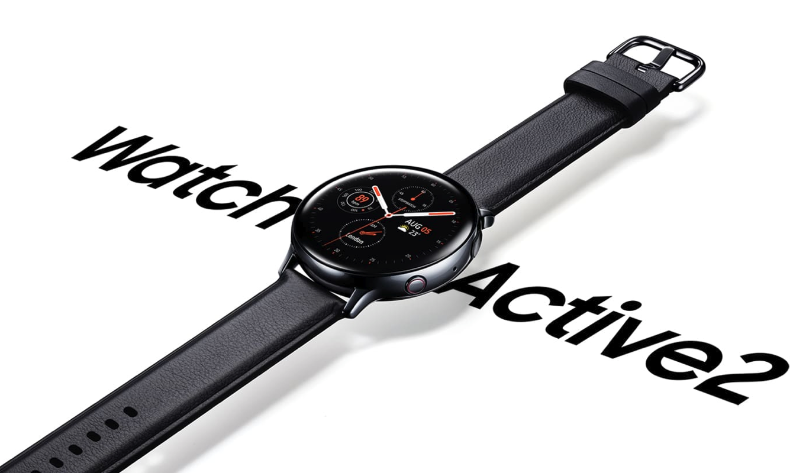
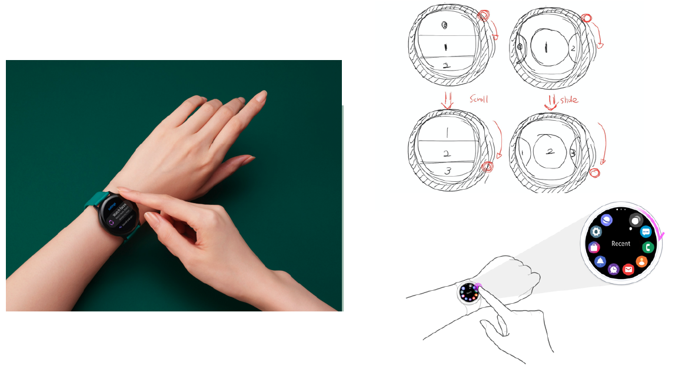
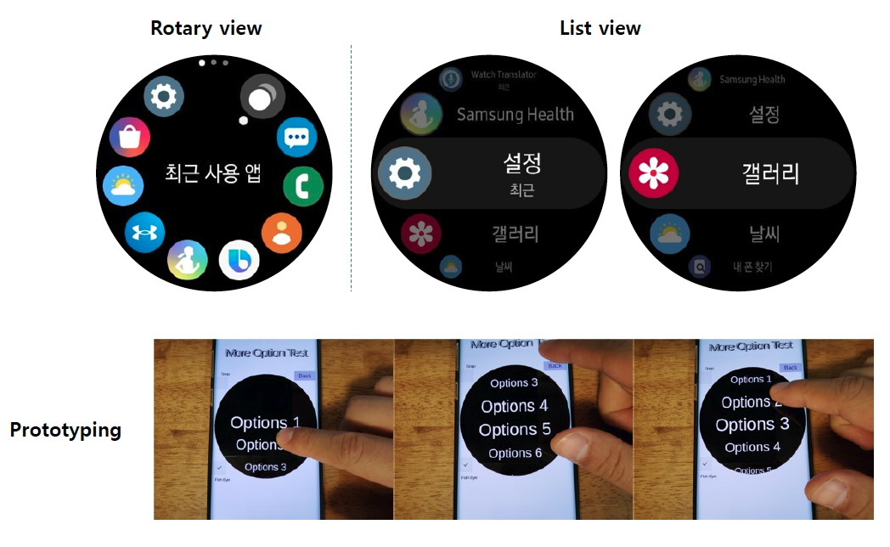
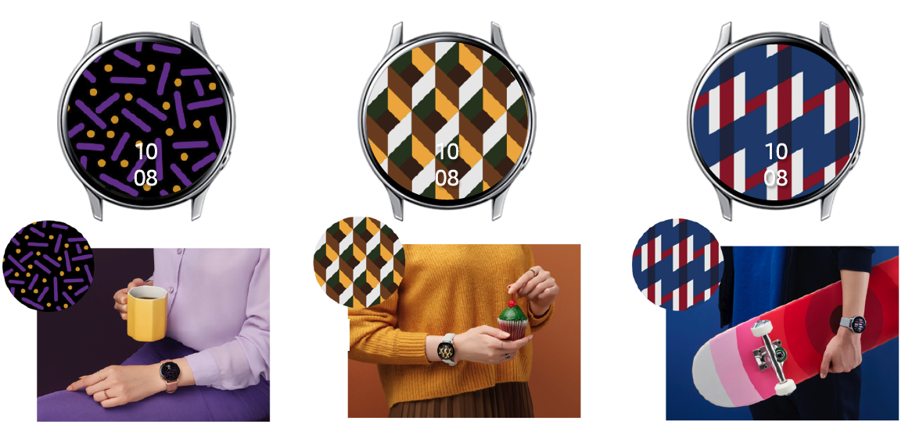
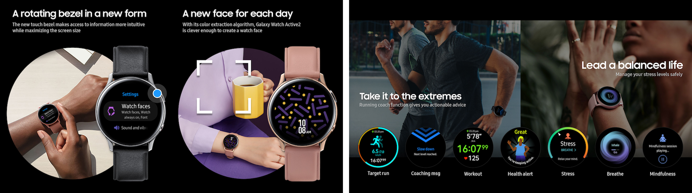

Introduce
Mar.2019 ~ Aug.2019
Description
Galaxy Watch Active 2 is the first-ever high-end smart watch that doesn't have a physical bezel around. Its sleek design and health-oriented feature attract many consumers. I was the main UX designer of this model who is responsible to decide the whole UX concept and makes all the UX deisngers in this project are heading in the same direction. At the same time, I take responsibility for improving the core structure of Watch navigation. On this page, I would like to introduce what I have done in Galaxy Watch Active 2 UX.
Role: UX PL/PM, UX-UI (Apps Tray, Home Structure, Recent), Research
Touch Bezel

Samsung experimentally launched Galaxy Watch Active, who is the predecessor of Galaxy Watch Active 2, and it didn't have a physical bezel. However, since the UI of the Galaxy watch series was very optimized for the circular - physical bezel, so it was inconvenient to navigate without the physical bezel, this causes many user complaints.
To overcome this, we decided to apply touch virtual bezel around the watch, which brings similar experience with physical bezel experience by swiping the edge of the screen. Not only providing the same interaction but also providing the same touch sense with the real bezel device, we need to fine-tune the degree of moving as users moving their finger, and also we need to provide proper haptic feedback. And it's also important to make a tutorial and marketing plan for introducing touch bezel.
After all, touch bezel becomes the signature interaction of Galaxy Watch Active 2 which is beloved most by users.
Ongoing icon display

As the processing power of the smart watch is getting stronger and the user behavior is getting more complexed, users are expecting multitasking more even in smart watch devices. Since one of the most basic and important features of smart watch is checking the time, users want to easily switch to see the time while they are using other applications in smart watch but they don't want to lose current tasks. To satisfy those user needs, Galaxy Watch Active 2 provide small icon at the bottom of the watch face screen so that user can easily notice which application is now going on as a background application and easily switch to that application by touching it.
This is especially useful
- When users listen to music and want to access to the controller from watch face screen
- Checking watch face and go back to the exercise screen while users are training
- while recording in the background and check its status from the watch face.
List view
The apps tray of the Galaxy Watch series is optimized for the circular screen. However, as the physical bezel is removed and there is no visual cue in the apps tray, some users confused to navigate circular apps tray so we decided to provide an alternative way to navigate apps tray - List view. Though this is an optional feature, we tested this in various ways with prototyping, and we could successfully implement it.
My Style Watch face

Watch face is the screen where users most frequently see and can show off who they are, their personalities well. Because of that, many users want to customize this, so Galaxy Watch provides many preload watch faces and also allows users to install 3rd party watch faces which can be downloaded from Galaxy Store.
And also, from Galaxy Watch Active 2, there we provide more chances to customize this screen by having My Style Watch face. My Style Watch face lets users take a picture of any objects they love most, and abstract the colors from it, then applying the color to the watch face so that users can have their original watch face which is harmonized with users' fashion, style and so on.
My Style Watch face is planned and designed by our UX team and we use this feature as a key marketing point that attracts users.
IF Design Award
Samsung Galaxy Watch Active2 UX / Smart watch UX
Custom comfort on your wrist. With the Galaxy Watch Active2, you can adorn your watch face with the photo you have just taken - optimize your watch face to suit your personal style and taste. Its innovative touch bezel UX allows you to readily access necessary information on an enlarged screen.